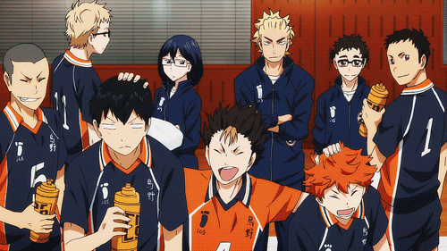
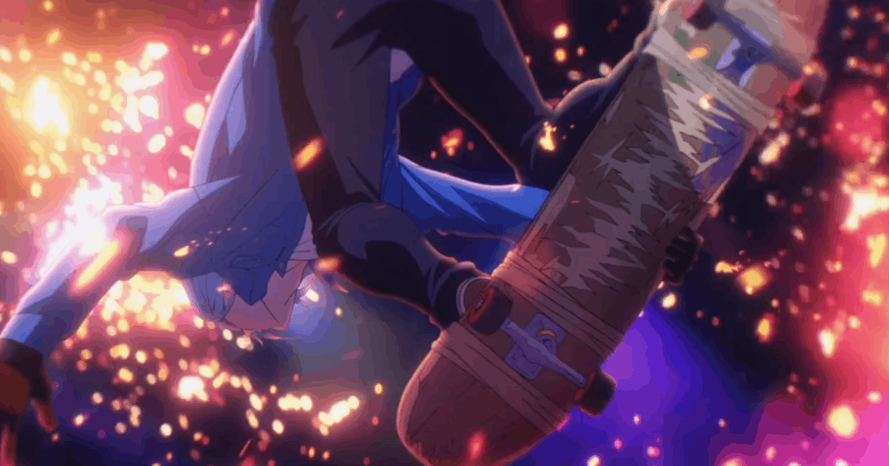

Haikyuu
A história gira em torno de Hinata Shoyo, um aluno do ensino médio que sonha em ser jogador de vôlei depois que assistiu a um campeonato pela televisão. O grande problema: ele é baixinho, e jogar vôlei com a rede daquela altura não é tarefa fácil. Mas Hinata já demonstra sua determinação e cria um clube de vôlei.
Blue Lock
A história gira em torno do Blue lock, onde para transformar a seleção do Japão em um time vitorioso, 300 atacantes são reunidos em um só lugar, em busca do goleador perfeito.

Kuroko No Basket
A história acompanha as aventuras de Tetsuya Kuroko, um jovem de 16 anos que, sob a aparência normal, esconde um formidável jogador de basquete. Ele costumava estudar no Colégio Teiko, cujo time fez história em quadra ao ganhar três temporadas consecutivas, recebendo o apelido de "Geração dos Milagres".

Hajime No Ippo
A história é sobre Ippo Makunouchi, que tem 16 anos, mas nunca faz coisas da sua idade. Seus dias consistem em ajudar sua mãe na loja de aluguel de barcos de pescaria e estudar. Certo dia, Ippo apanha de uns garotos que o cercam a caminho de casa, mas é salvo por um grande lutador de Boxe.
2 - Assistir Hajime no Ippo: Mashiba vs. Kimura (OVA)
3 - Assistir Hajime no Ippo: Champion Road (Filme)
4 - Assistir Hajime no Ippo: New Challenger
5 - Assistir Hajime no Ippo: Rising

Slam Dunk
Traz a história de Hanamichi Sakuragi, um estudante do colegial delinquente apaixonado pela delicada Haruko Akagi, que o introduz ao mundo do basquete. A partir daí, o desajeitado personagem começa a se envolver no esporte, em fazer parte de uma equipe e a se desenvolver como atleta e pessoa.

Ao Ashi
Conta a história do jovem Ashito Aoi em seu terceiro ano na Ehime City Middle School e seu encontro com o técnico de futebol Tatsuya Fukuda. Ashito, apesar de talentoso, é um garoto difícil, mas Fukuda acredita nele e o convida para se juntar ao seu próprio time.

Birdie Wing Golf Girls' Story
Uma história juvenil centrada em duas jovens golfistas chamadas Eve e Aoi Amawashi. Sendo assim, as duas vêm de origens completamente diferentes, e têm estilos de jogo completamente opostos, e juntas vão agitar o mundo do golfe.

Re-main
Durante seu terceiro ano do fundamental, a estrela do polo aquático Minato Kiyomizu foi vítima em um acidente e está em coma desde então. Exatamente 203 dias depois, Minato recuperou a consciência, mas perdeu vários anos de suas memórias.

Shakunetsu Kabaddi
Conta a história de Tatsuya Yoigoshi, aluno do primeiro ano do ensino médio, ex-craque de um time de futebol do segundo grau que passou a não gostar de esportes, que recebe um convite para ingressar no clube Kabaddi.

SK∞
O anime é centrado em Reki, um estudante do segundo ano do ensino médio que adora andar de skate e é pego em “S”, uma perigosa corrida de skate subterrânea em uma mina abandonada sem regras. Ranga, que voltou do Canadá ao Japão e nunca patinou antes, também se envolve em S junto com Reki.
